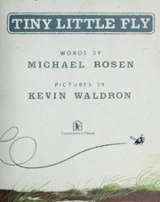
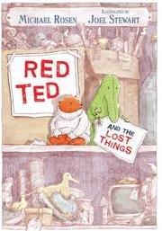
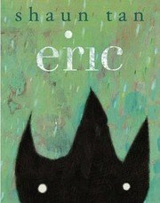
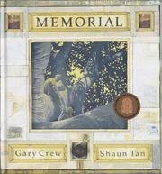
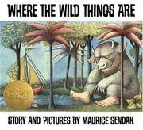
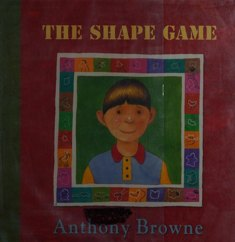
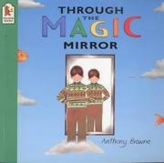
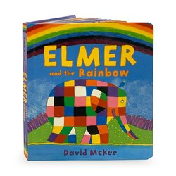
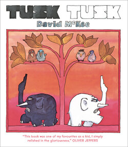

Authors
Explore how picturebook creators use words, images and book design across their work.
I currently receive no financial support or commission through this website. I welcome collaboration enquiries and may consider paid partnerships or affiliate links in future. I’ll clearly label any paid arrangements or links that may earn me a commission.
94 reading-list entries
For more recommendations, explore BookTrust’s Bookfinder.
Author studies
Michael Rosen
Read the books aloud to hear how repetition, pauses and changes of voice shape the story. Compare what each illustrator adds to Rosen’s words.

 Cover pending
Cover pendingMichael Rosen’s Sad Book
Michael Rosen · Quentin Blake
2004 · Walker Books

We’re Going on a Bear Hunt
Michael Rosen · Helen Oxenbury
1989 · Walker Books


A Great Big Cuddle: Poems for the Very Young
Michael Rosen · Chris Riddell
2015 · Walker Books





- Cover pending
Jeannie Baker
Compare how collage and successive views of the same place show environmental change over time.


- Cover pending

Shaun Tan
Compare how unusual settings and changes of scale create a sense of strangeness, displacement or belonging.






Christopher Cheng
Australian children’s author. These picturebooks pair his writing with the work of Bruce Whatley and Stephen Michael King.
- Cover pending
One Tree
Christopher Cheng; illustrated by Bruce Whatley
2019 · Puffin · ISBN 9780143786733
A discovery at the city market brings a grandfather’s memories of a farm and its tree back to life.
Edition and cover details - Cover pending
Bear and Rat
Christopher Cheng; illustrated by Stephen Michael King
2021 · Puffin
A story of friendship and care through illness and difficult changes.
Edition and cover details
David Wiesner
Compare how framing, page turns and repeated visual details guide the reader through wordless and near-wordless stories.


Beatrice Alemagna
Compare how texture, scale and changes of perspective bring a child’s curiosity and uncertainty into view.
- Cover pending

- Cover pending

- Cover pending

Maurice Sendak
Compare how page layout and scale mark the journey into fantasy in Where the Wild Things Are, In the Night Kitchen and Outside Over There.
- Cover pending
- Cover pending

- Cover pending
Higglety Pigglety Pop! or There Must Be More to Life
Maurice Sendak
First published 1967

- Cover pending

We Are All in the Dumps with Jack and Guy
Maurice Sendak
First published 1993

Grace Lin
Compare how Lin draws on family life, food and folklore, and how she moves between everyday settings and imagined worlds.
 Cover pending
Cover pendingDim Sum for Everyone!
Grace Lin
· New York: Alfred A. Knopf
A family shares small dishes at a dim sum restaurant, with details that invite children to talk about food and family routines.
Find at Waterstones UK Cover pending
Cover pendingKite Flying
Grace Lin
· New York: Alfred A. Knopf
A family makes and flies a dragon kite together.

 Cover pending
Cover pendingBringing In the New Year
Grace Lin
· New York: Alfred A. Knopf
A Chinese American family prepares for Lunar New Year through shared household traditions.
Find at Waterstones UK
 Cover pending
Cover pendingA Big Mooncake for Little Star
Grace Lin
· New York: Little, Brown and Company
A playful story about the phases of the moon, inspired by the Mid-Autumn Festival.
Find at Waterstones UK
Suzy Lee
Compare how Lee uses the gutter and the edges of a spread to create boundaries that characters and readers can cross.

- Cover pending

- Cover pending
- Cover pending
Open This Little Book
Jesse Klausmeier (author) · Suzy Lee (illustrator)
Compare the nested books with Lee’s use of page boundaries in her wordless work.
Anthony Browne
Look for visual clues that recur from book to book, then compare whose point of view shapes each story.
 Cover pending
Cover pending
- Cover pending


- Cover pending




David McKee
Compare how McKee uses colour to explore belonging in Elmer and conflict in Tusk Tusk. In Two Monsters and Not Now, Bernard, what can readers see that the characters miss?
David McKee’s publisher profile
 Cover pending
Cover pending
Cover pending Cover pending
Cover pending Cover pending
Cover pending Cover pending
Cover pending
Cover pending Cover pending
Cover pending Cover pending
Cover pending
John Burningham
Read Come Away from the Water, Shirley alongside Time to Get Out of the Bath, Shirley. How do the illustrations make room for an imaginary adventure alongside an ordinary conversation?
Borka: The Adventures of a Goose with No Feathers
John Burningham
First published 1963
 Cover pending
Cover pending- Cover pending
- Cover pending


John Patrick Norman McHennessy: The Boy Who Was Always Late
John Burningham
First published 1987
- Cover pending
Selected covers from publishers. Additional edition covers supplied by Open Library where available.
Alexandra Strick
Picturebook writer, consultant and reviewer whose collaborative work incorporates children’s perspectives.
- Cover pending
You Can!
Alexandra Strick · Steve Antony
2021 · Otter-Barry Books
Follow the same children across life stages and look for the visual stories that run alongside the text.
- Cover pending
We Can!: Make a Difference
Alexandra Strick · Steve Antony
2024 · Otter-Barry Books · ISBN 9781915659309
A child-led festival makes room for accessible play and collective action.
Patrice Lawrence
The 2026–28 Waterstones Children’s Laureate writes picturebooks, fiction for young readers and YA novels.

Granny Came Here on the Empire Windrush
Patrice Lawrence · Camilla Sucre
2022 · Nosy Crow · ISBN 9781839942310
Objects from Granny’s suitcase open up a family history of migration from Trinidad to England. The story touches on racism and belonging.
- Cover pending
Our Story Starts in Africa
Patrice Lawrence · Jeanetta Gonzales
2022 · Magic Cat Publishing
A family visit to Trinidad opens up a conversation about African and Caribbean histories.
Celeste Walters
An Australian writer whose books span picturebooks, verse and fiction.
- Cover pending
Only a Donkey
Celeste Walters · Patricia Mullins
2008 · Picture Puffin paperback · ISBN 9780143501220
A teased farm donkey has a dream that connects the animals’ journey with the Australian story of Simpson and his donkey. Themes include war and remembrance.
Mark Greenwood
An Australian author who brings historical events into narrative nonfiction.
- Cover pending
Simpson and His Donkey
Mark Greenwood · Frané Lessac
2008 · Walker Books Australia · ISBN 9781921150180
A picturebook retelling of Gallipoli through the work of a stretcher-bearer and his donkey. Read with historical context for older primary readers.